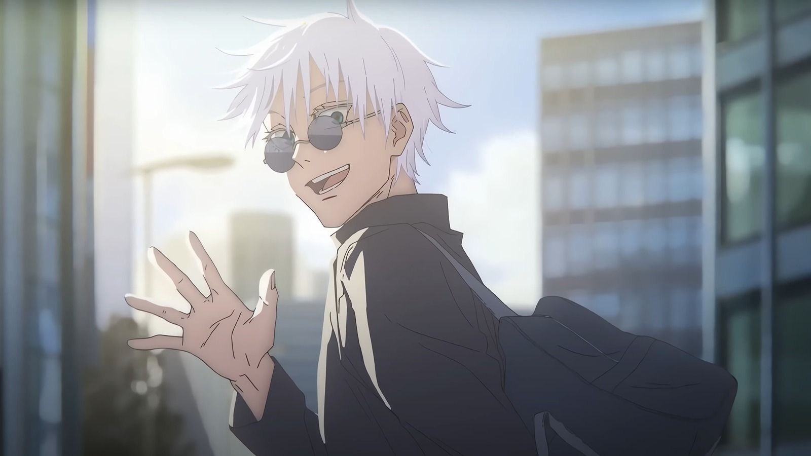

El tema que seccione es un manga/anime japonés. El manga fue creado por el mangaka Gege Akutami.
Gege Akutami (芥見下々 Akutami Gege?) nació el 26 de febrero de 1992 en Prefectura de Iwate, Japón.
Artista de manga japonés, recibió reconocimiento por crear Jujutsu Kaisen y su precuela Tokyo Metropolitan Curse Technical School.
¿Que es JuJutsu Kaisen?
Jujutsu Kaisen (呪術廻戦 lit. Guerra de Hechicería?), también conocida como Jujutsu Kaisen: Guerra de hechiceros en España, es una serie de manga japonés escrita e ilustrada por Gege Akutami. Shūeisha pública sus capítulos en la revista Shūkan Shōnen Jump desde el 5 de marzo de 2018 y los ha recopilado y publicado en veintiséis volúmenes tankōbon a mediados de 2024.
La historia gira en torno al estudiante Yūji Itadori, quien se une a una organización secreta de hechiceros para matar a una poderosa maldición llamada Ryomen Sukuna tras convertirse en su anfitrión.
Es una secuela de Tokyo Metropolitan Curse Technical School, del mismo Akutami, que Shūeisha publicó en la revista Jump GIGA entre el 28 de abril y el 28 de julio de 2017 y posteriormente recopiló en un volumen tankōbon bajo el título Jujutsu Kaisen 0, publicado el 4 de diciembre de 2018.
VIZ Media tiene la licencia para su lanzamiento en inglés en América del Norte y pública el manga impreso desde diciembre de 2019.
Norma Editorial lo pública en España y Editorial Panini en México y Argentina. Además, Shūeisha lo pública en inglés y español en la plataforma en línea Manga Plus. Dos novelas escritas por Ballad Kitaguni se publicaron en mayo de 2019 y enero de 2020, respectivamente.
Una adaptación de la serie a anime de veinticuatro episodios producidos por el estudio MAPPA se emitió en el bloque de programación Super Animeism de MBS desde el 3 de octubre de 2020 hasta el 27 de marzo de 2021. El 12 de febrero de 2022, el anime fue renovado para una segunda temporada, la cual se transmitió en 2023.
Crunchyroll tiene la licencia para transmitir el anime fuera de Asia y estrenó un doblaje en inglés en noviembre de 2020. La banda sonora original del anime se lanzó en abril de 2021.
En octubre de 2021, el manga Jujutsu Kaisen tenía más de 55 millones de copias en circulación, incluidas las versiones digitales y Jujutsu Kaisen 0, lo que la convierte en una de las series de manga más vendidas de todos los tiempos.
Ambientación
En Jujutsu Kaisen, todos los seres vivos emanan una energía llamada Energía Maldita (呪力, Juryoku), que brota de las emociones negativas que fluyen naturalmente por el cuerpo. Las personas normales no tienen la habilidad de controlar este flujo en sus cuerpos.
Como resultado, liberan continuamente esta Energía Maldita, lo que da lugar a que surjan las Maldiciones (呪い, Noroi), una raza de seres espirituales cuyo principal deseo es el de hacerle daño a la humanidad.
Los Hechiceros Jujutsu (呪術師, Jujutsushi, lit. "Maestros de Técnicas Malditas" o "Chamanes") son personas que tienen la habilidad de controlar el flujo de Energía Maldita en sus cuerpos, lo que les permite usarla a su antojo, así como reducir cuánto de ella se libera.
Los Hechiceros y las Maldiciones de alto rango pueden refinar esta energía y utilizarla para ejecutar Técnicas Malditas (呪術式, Jujutsushiki), que suelen ser exclusivas del usuario particular o correr en su familia.
Una forma avanzada de Técnica Maldita es la Expansión de Dominio (領域展開, Ryōiki Tenkai), técnica mediante la cual el usuario puede utilizar su Energía Maldita para construir una dimensión de bolsillo que cubre el área circundante y dentro de la cual todos los ataques son más fuertes.
Trama
Yūji Itadori es un estudiante de secundaria que vive en Sendai con su abuelo. Se une al Club de Investigación de lo Oculto, a pesar de poseer un talento innato para el deporte. Va a visitar a su abuelo moribundo al hospital todos los días.
En su lecho de muerte, su abuelo inculca dos poderosos mensajes dentro de Yuji: «siempre ayuda a la gente» y «muere rodeado de gente». Estas dos ideas aparentemente provienen de los propios arrepentimientos de su abuelo. Después de la muerte de su abuelo, Yūji interpreta estos mensajes como una declaración: todos merecen «una muerte adecuada».
Luego se enfrenta a Megumi Fushiguro, un hechicero que le informa de un talismán de categoría especial en su escuela con el que Yūji recientemente se puso en contacto.
Sus amigos del Club de lo Oculto abrieron el talismán, un dedo podrido, que atrajo a la escuela a las Maldiciones, criaturas que surgen a través de emociones negativas.
Incapaz de derrotar a las maldiciones debido a su falta de poderes mágicos, Yūji se traga el dedo para proteger a Megumi y sus amigos y se convierte en el recipiente de Ryōmen Sukuna, una poderosa maldición.
Debido a su naturaleza malvada, las reglas dictan que debe ser exorcizado (y, por extensión, a Yūji) de inmediato. Sin embargo, a pesar de estar poseído, Yūji todavía puede mantener el control de su cuerpo la mayor parte del tiempo.
Al ver esto, Satoru Gojō, el maestro de Megumi, decide llevarlo a la escuela Tokyo Prefectural Jujutsu High School para proponer un plan a sus superiores: posponer la sentencia de muerte de Yūji hasta que consuma todos los dedos de Sukuna, permitiéndoles matarlo de una vez por todas.
Personaje Favorito
Satoru Gojo es uno de mis personajes favoritos, desde la primera vez que lo vi en el anime desde ese instante me encanto el personaje. “De verdad, lo lamento. No estoy enojado, no odio a nadie. Todo lo que estoy sintiendo en estos momentos es placer por el mundo. A través del cielo y la tierra, soy el único honrado.”
Satoru Gojo (五条悟 Gojō Satoru?) es uno de los personajes de la serie manga Tokyo Metropolitan Curse Technical School y uno de los protagonistas de la serie secuela, Jujutsu Kaisen.
Conocido con el apodo de El Chamán Más Fuerte (最強の呪術師 Saikyō no Jujutsu-shi?), es uno de los cuatro chamanes de Clase Especial, antiguo compañero de Suguru Geto y Shoko Ieiri, y actual profesor del Colegio Técnico de Magia Metropolitana de Tokio, encargado de los alumnos de primer año.
Como único miembro y cabeza del Clan Gojo, es descendiente del chamán y espíritu vengativo, Sugawara-no-Michizan, y heredero de la Técnica de Maldición Ilimitada y el poder de los seis ojos.
Desde el día de su nacimiento, se produjo un balance de poder entre la humanidad y las maldiciones; la caída de su clan y por ende, su muerte, significaría perder dicho balance, provocando una guerra a gran escala que sería difícil de ganar para la humanidad.
Apariencia

Satoru es un hombre delgado y bastante alto, llegando a medir 190 centímetros.
Su cabello es de color blanco y suele llevarlo peinado hacía arriba con lo mechones puntiagudos cuando se encuentra ejerciendo como maestro o chamán; en sus tiempos libres, suele tener todo su cabello desarreglado y gran parte de éste tiende a caer su cara, tapando gran parte de su frente y ojos.
Sus ojos son de un peculiar color azul claro y en sus iris, tiende a manifestarse una imagen similar al cielo. Es considerado atractivo por muchas mujeres.
A menudo usa una tela de color oscuro para cubrir sus ojos; mientras que, en la serie precuela Tokyo Metropolitan Curse Technical School, los ojos de Gojo están vendados con vendas blancas.
Durante sus días de juventud, solía usar lentes de sol en lugar de vendas o telas.
Su vestimenta característica consiste en un abrigo negro de cuello alto, pantalones negros largos y zapatos negros; ésta misma vestimenta, en el anime, es representada en color azul marino.
Al optar por vestirse de manera más informal, Gojo usa unos lentes oscuros y redondos en lugar de una venda en los ojos y vestimenta bastante casual, generalmente un camisas oscuras de mangas largas y pantalones holgados.
Cuando era niño solía utilizar una vestimenta tradicional japonesa que consistía en un kimono y su haori tenía un patrón con formas similares a las libélulas.
En otras ocasiones, utilizaba ropa casual como sudaderas de color claro y pantalones oscuros.
Angela Sofia Chavez Castro es de 1 año de Dessarrollo de Software, Sección "B".
Es mi compañera y amiga del grado, ella es amable, alegre, es una personas carismáticas,
ella es capaz de entablar conversación rapida con otras personas y se hace muy rapido amiga de la
las personas, por eso se le quiere mucho.
Paola Denisse Guzmán Molina 1 año de Desarrollo de Software, Sección "B".
Yo soy reservada, amable miedosa y no me guste hablar con la personas que no
conozco por eso megusta matenerme distante de la gente.